| 日付 | 2019年4月28日（日） |
|---|---|
| 山域 | 西上州 |
| メンバー | 家族（妻、長女・8歳、長男・5歳） |
| 山行形態 | 子連れ日帰り |
| アクセス | 車 |
| ルート (Map) | 鹿岳駐車場 (8:55) - (10:15) 一ノ岳二ノ岳分岐点 - (10:26) 一ノ岳 - (11:01) 二ノ岳 (11:49) - (12:07) 一ノ岳二ノ岳分岐点 - (12:43) マメガタ峠 - (13:00) 畑 (13:23) - (13:37) 車道 - (13:57) 鹿岳駐車場 |
GWは四国旅行に出かける予定だったが、
明日からしばらく雨予報で、計画変更を余儀なくされる。
移動日予定だった本日は終日晴れ予報のため、日帰りで山に行くことにする。
この季節に山に登るならアカヤシオが咲く西上州が良いだろう。
前から再訪したかった鹿岳に、11年振りに登ることにする。
鹿岳駐車場に到着。標高440m。
意外なことに、すでに車がたくさん停まっている。
背景の新緑が美しい。その中に見える岩壁は正に西上州の景観だ。

駐車場から少し歩くと登山口に到着する。
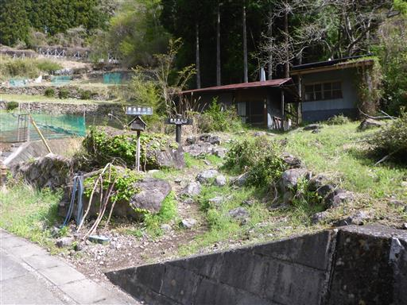
最初は植林地帯を登って行く。
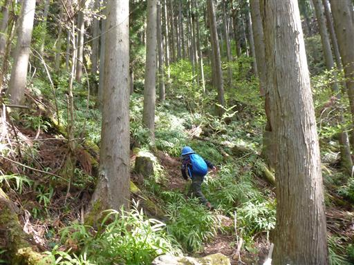
所々で岩壁が現れる。岩壁にある穴はどうやって開いたのだろう？
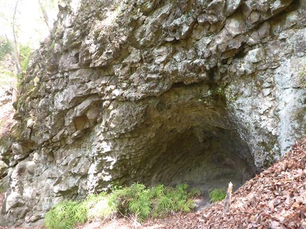
登山道を塞ぐ倒木。子供は楽だが大人は通過しにくい。
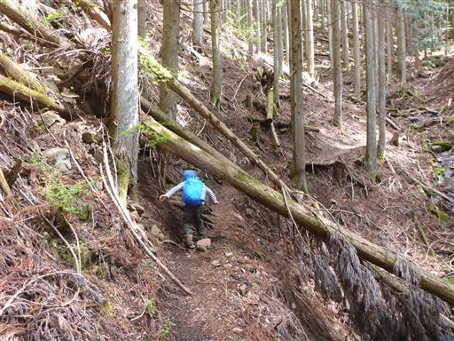
エイザンスミレの花が咲いている。
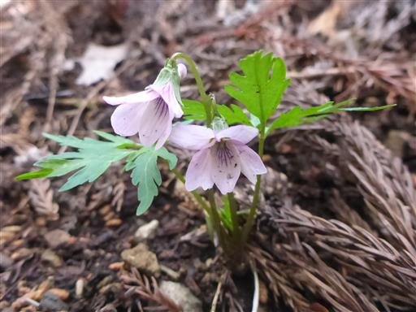
ミミガタテンナンショウだろうか？
まるで花瓶に入っているかのような姿で生えている。
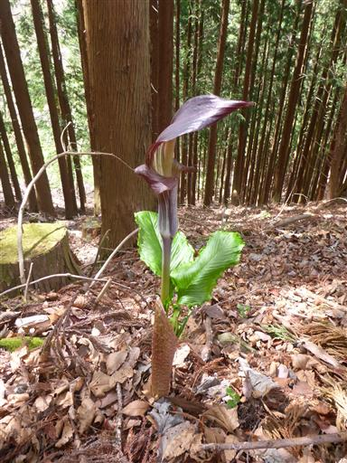
陽の光を浴びて新緑が目に眩しい。
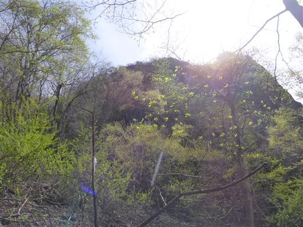
地味な登山道を登って行くと、岩場が現れて稜線に到達する。

ここは一ノ岳と二ノ岳の鞍部。
段差の大きな梯子を越えて、まずは一ノ岳に向かう。
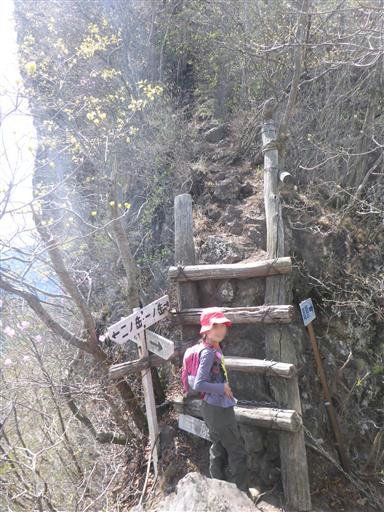
ここから一ノ岳山頂まではかなりの急斜面が続く。
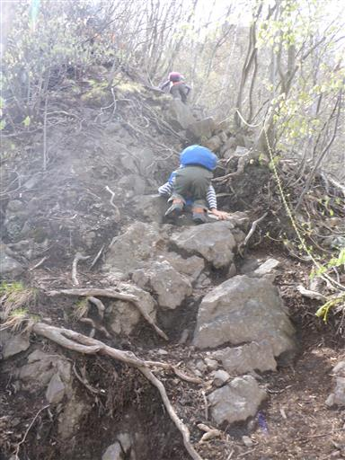
途中で振り返ると、二ノ岳が圧倒的存在感で目の前に聳えている。
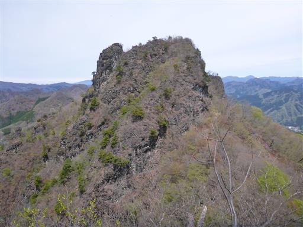
妙義山や榛名山などの大展望が広がる。
遠景の白い山々は谷川連峰の辺りだ。
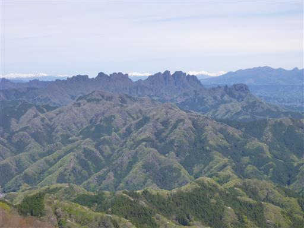
一ノ岳の山頂に到着する。
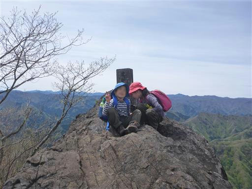
周囲は絶壁だ。
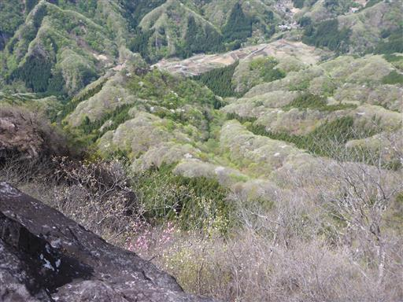
山頂からの展望は素晴らしい。周囲はアカヤシオの花に包まれている。
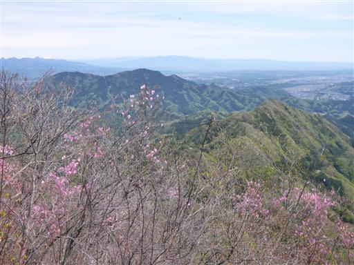
遠くに見えている白い山々は八ヶ岳。
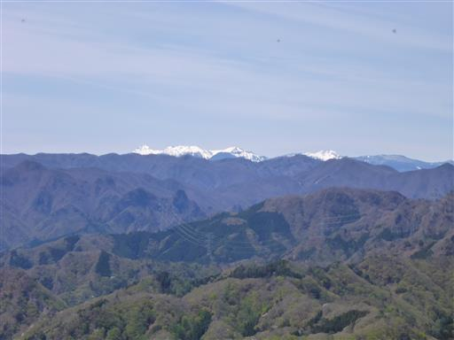
一ノ岳を下山し、二ノ岳に向かう。稜線は痩せ尾根だ。
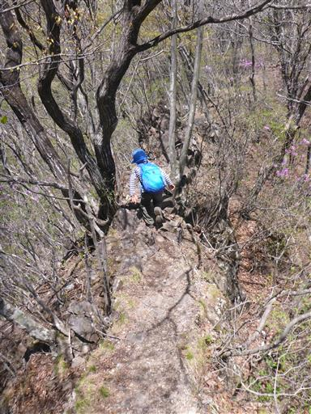
振り返ると一ノ岳の岩峰が聳え立っている。
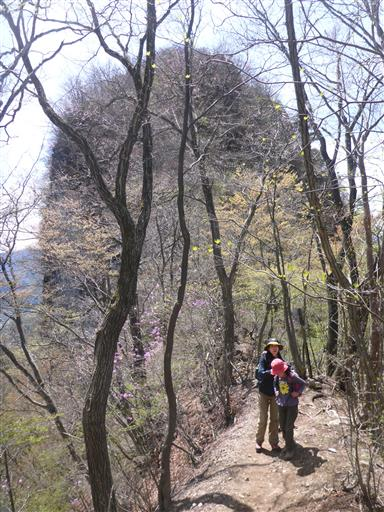
二ノ岳の基部に到着。ここから再び岩場だ。
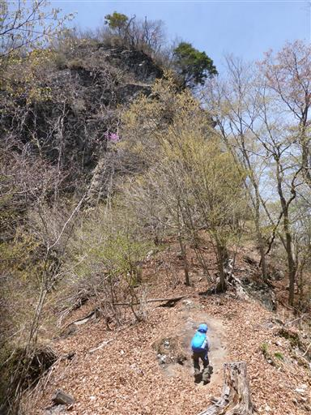
崖に付けられた梯子を渡る。
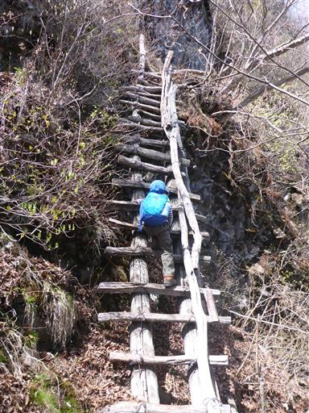
続いて鎖場。
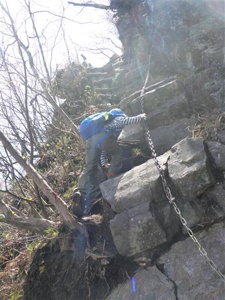
先ほど登った一ノ岳が眼下に見えている。
ニョキっと伸びた岩峰は西上州独特の山容だ。
山頂部がアカヤシオでピンクに染まっている。
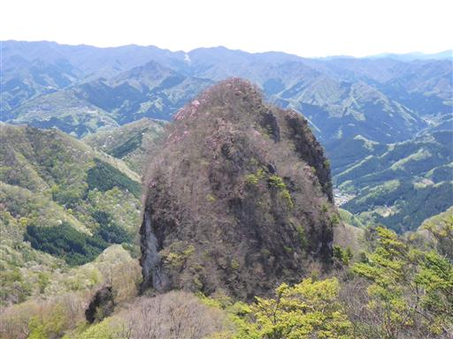
二ノ岳にもチラホラとアカヤシオの花が咲いている。
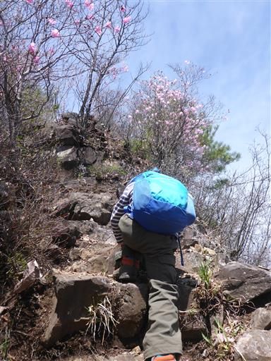
そしてもちろん二ノ岳の周囲も断崖絶壁だ。
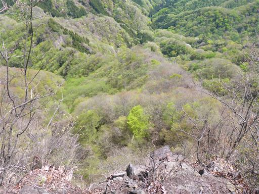
二ノ岳に到着。こちらの方が標高が高いので、こちらが鹿岳本峰だ。
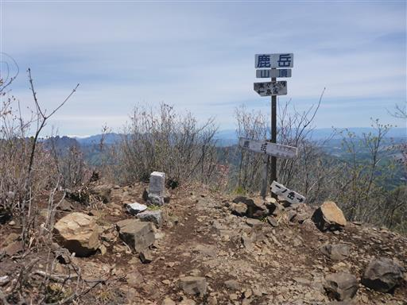
山頂からは大きな浅間山が望める。
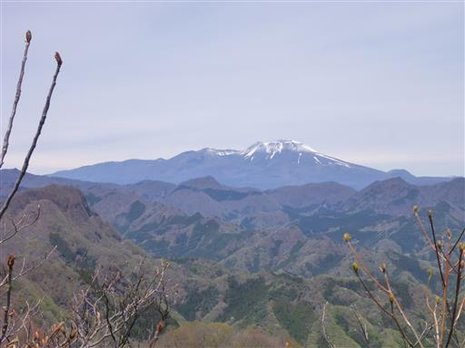
山頂は少々樹木に覆われているため、展望の良いすぐそばのピークに移動する。
ここで昼食をとることにする。
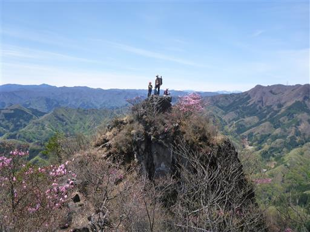
昼食をとったら下山開始。
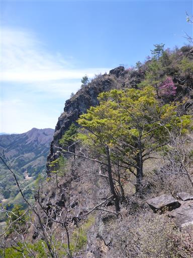
蟻が自分の体より大きなキリギリスを運んでいる。
キリギリスはまだ生きているようでもがいているが、蟻には勝てないようだ。
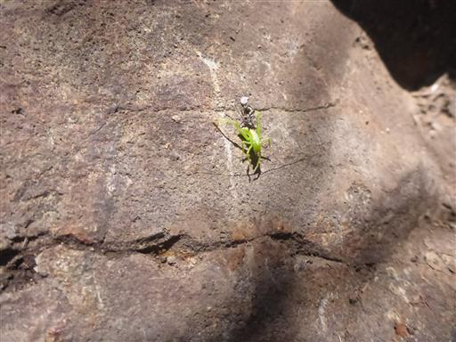
鎖場を慎重に下山。息子はまだサポートが必要だ。
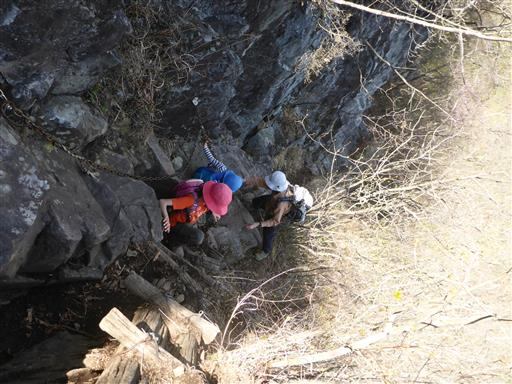
続いて梯子を下る。
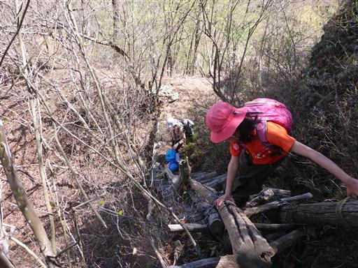
一ノ岳と二ノ岳の鞍部に戻ってきたら、登りとは異なる道を下山する。
一ノ岳を回り込むように付けられたトラバース道で、横は急斜面のため気を使う場所だ。
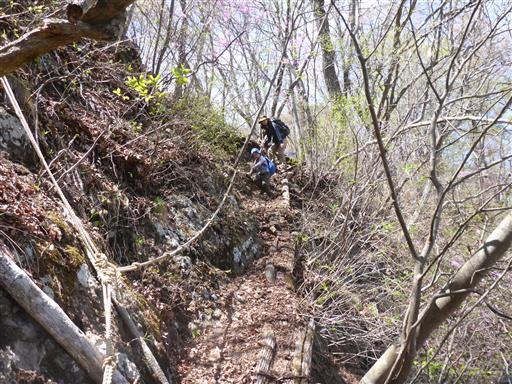
一ノ岳の反対側に出てくる。背後に聳える岩壁は大きすぎてカメラに収まらない。
以前この山に来た時に、この岩壁の大きさに驚いた記憶があるが
10年経った今見てもその存在感は変わらない。
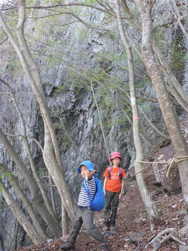
ここからは安全な尾根道歩き。早春の風景の中をのんびりと下っていく。
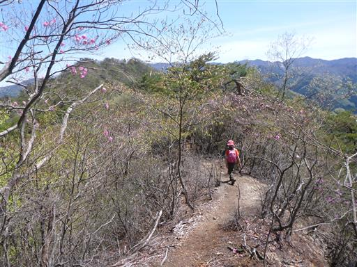
振り返ると一ノ岳が聳えている。まばらに咲くアカヤシオが美しい。

ツツジとサクラの競演。
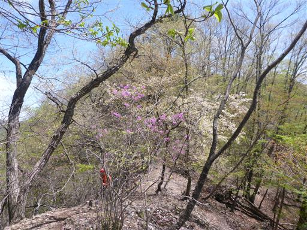
展望台に寄り道。ここからは鹿岳の二峰を望むことができる。
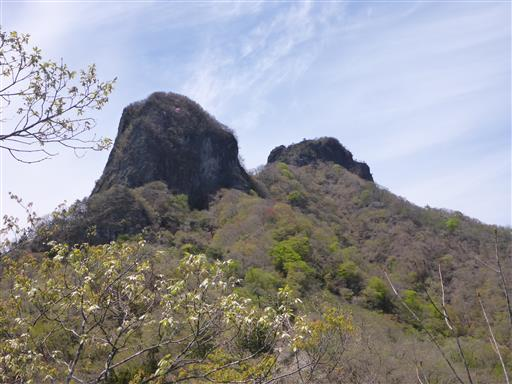
枯木に息子が登り出したが、ボロボロ崩れて危険なので制止。
この木はそう遠くない未来に崩れ落ちるだろう。
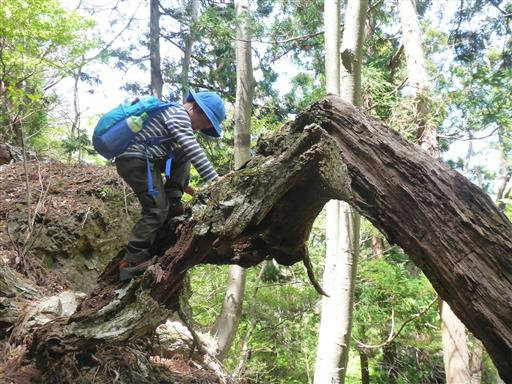
マメガタ峠に到着。ここから稜線を離れて下山する。
右側は植林、左側は自然林だ。
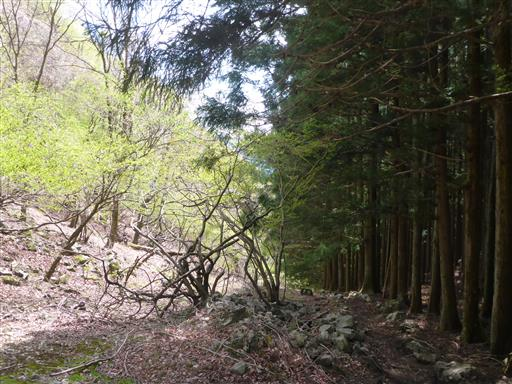
中腹に畑が広がる。植えられた植物は見当たらないが、きれいに整備されている。
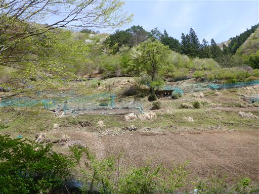
畑の裏の斜面の一角にある新緑と花々が非常に美しい。
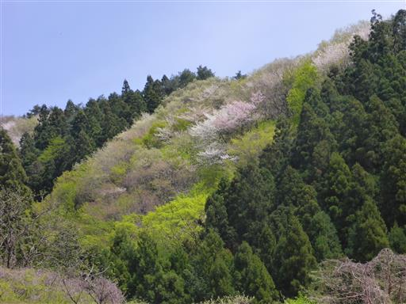
そばを流れる小さな沢で一服することにする。
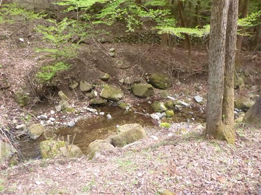
ナナフシの赤ちゃんを発見。
滅多に見ない生き物の赤ちゃんを見つけられるとはラッキーだ。
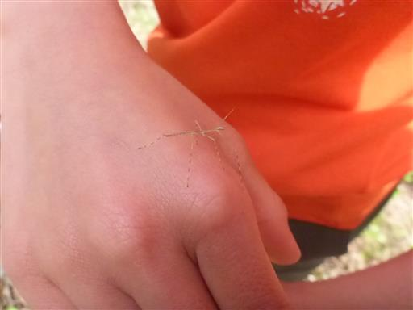
小さな三段の滝。特に名前は無いようだ。
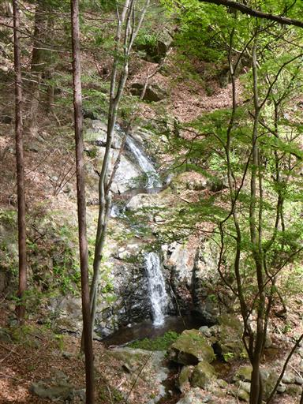
最後は新緑に包まれた林道を下っていく。
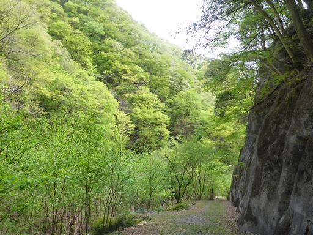
四ツ又山登山口に下山する。存在感のある木でできた顔が置かれているが、
子供たちは登山届のポストの方に興味があるようだ。

車道に到着。ここでもナナフシの赤ちゃんを発見。
それほど珍しいものでもないようだ。
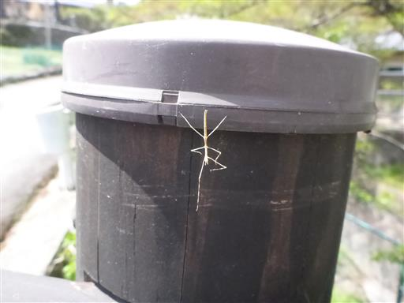
シャクトリムシ。二匹がもつれ合っているが、喧嘩しているのだろうか？
一匹は動いていないようにも見えるので、もしかして脱皮中？
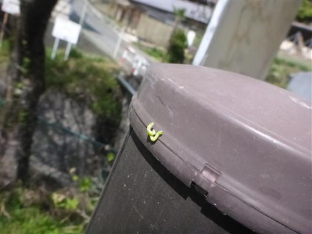
最後は絶壁に挟まれた車道を歩いて駐車場に戻る。
前回登った時同様、今回も素晴らしい山登りを楽しむことができた。
鹿岳は紛れもなく名峰だと思う。
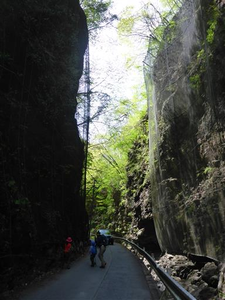